Introduction
In this vignette, I will examine assessments specific to Benin. I will walk through three types of visualizations:
- Total number of assessments per year
- Proportional breakdown of IUCN categories
- Trends over time for threatened categories (CR, EN, VU)
Refer to this vignette to learn more about how to access the data.
Query Data
# Load the package
library(redlist)
# Get all data on Benin
benin_rl <- rl_countries(code = "BJ", page = NA)
# Basic overview
glimpse(benin_rl)
#> Rows: 9,786
#> Columns: 15
#> $ country_description_en <chr> "Benin", "Benin", "Benin", "B…
#> $ country_code <chr> "BJ", "BJ", "BJ", "BJ", "BJ",…
#> $ assessments_year_published <dbl> 2013, 2025, 2014, 2013, 2014,…
#> $ assessments_latest <lgl> FALSE, TRUE, TRUE, TRUE, TRUE…
#> $ assessments_possibly_extinct <lgl> FALSE, FALSE, FALSE, FALSE, F…
#> $ assessments_possibly_extinct_in_the_wild <lgl> FALSE, FALSE, FALSE, FALSE, F…
#> $ assessments_sis_taxon_id <dbl> 137286, 137829, 137859, 13795…
#> $ assessments_url <chr> "https://www.iucnredlist.org/…
#> $ assessments_taxon_scientific_name <chr> "Caccobius ferrugineus", "Gar…
#> $ assessments_red_list_category_code <chr> "LC", "LC", "LC", "LC", "LC",…
#> $ assessments_assessment_id <dbl> 522738, 531737, 532227, 53393…
#> $ assessments_code <chr> "BJ", "BJ", "BJ", "BJ", "BJ",…
#> $ assessments_code_type <chr> "country", "country", "countr…
#> $ assessments_scopes_description_en <chr> "Global", "Global", "Global",…
#> $ assessments_scopes_code <dbl> 1, 1, 1, 1, 1, 1, 1, 1, 1, 1,…The dataset includes all species assessed in Benin across various taxonomic groups — including plants, animals, fungi, and other organisms.
Number of Assessments per Year
Understanding the volume of assessments over time gives insight into conservation attention and effort.
benin_rl %>%
count(assessments_year_published) %>%
ggplot(aes(x = assessments_year_published, y = n)) +
geom_line(color = "steelblue") +
geom_point(color = "darkblue") +
labs(
title = "Number of assessments per year in Benin",
x = "Year",
y = "Number of assessments"
) +
theme_minimal()
Proportion of Red List Categories
Most species in Benin fall under Least Concern (LC), but some are classified as threatened. This chart highlights the proportion of assessments by category.
benin_rl %>%
filter(!is.na(assessments_red_list_category_code)) %>%
count(assessments_red_list_category_code) %>%
mutate(prop = n / sum(n)) %>%
ggplot(aes(x = reorder(assessments_red_list_category_code, -prop), y = prop)) +
geom_col(fill = "salmon") +
scale_y_continuous(labels = scales::percent_format()) +
labs(
title = "Proportion of red list categories in Benin",
x = "Red List Category",
y = "Proportion"
) +
theme_minimal()Trends in Threatened Categories Over Time
Focusing on Critically Endangered (CR), Endangered (EN), and Vulnerable (VU) species helps track biodiversity risk.
benin_rl %>%
filter(assessments_red_list_category_code %in% c("CR", "EN", "VU")) %>%
count(assessments_year_published, assessments_red_list_category_code) %>%
ggplot(aes(x = assessments_year_published, y = n,
color = assessments_red_list_category_code)) +
geom_line() +
geom_point() +
labs(
title = "Trends of Threatened Categories (CR, EN, VU) Over Time",
x = "Year",
y = "Number of Assessments",
color = "Category"
) +
theme_minimal()